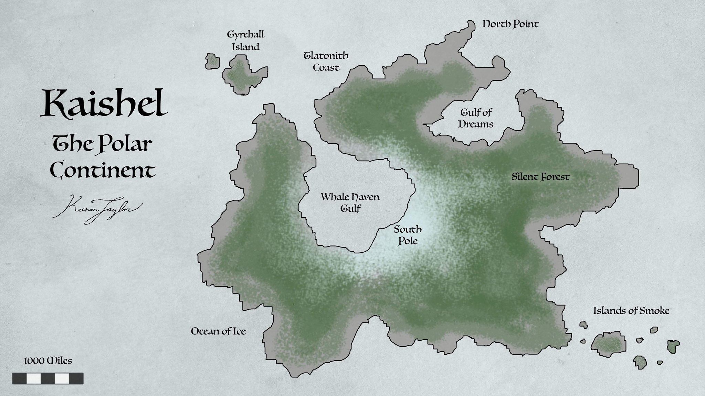
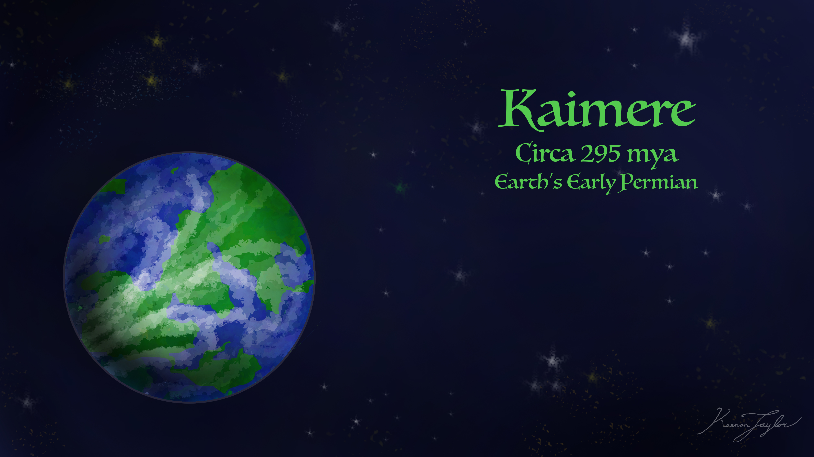
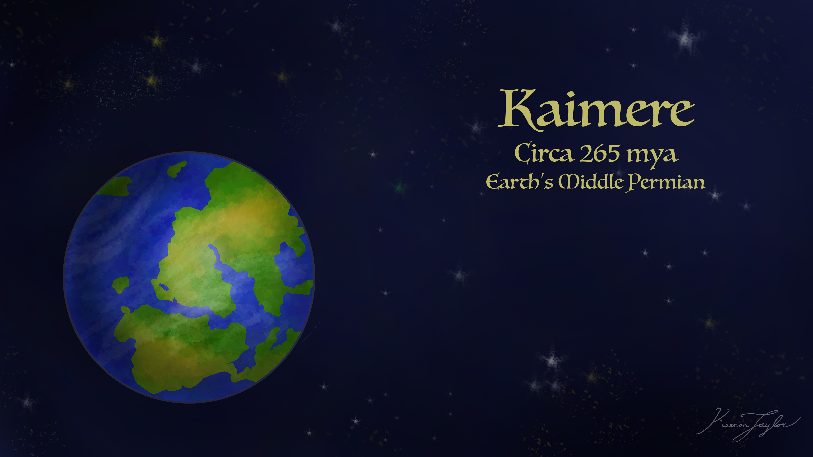
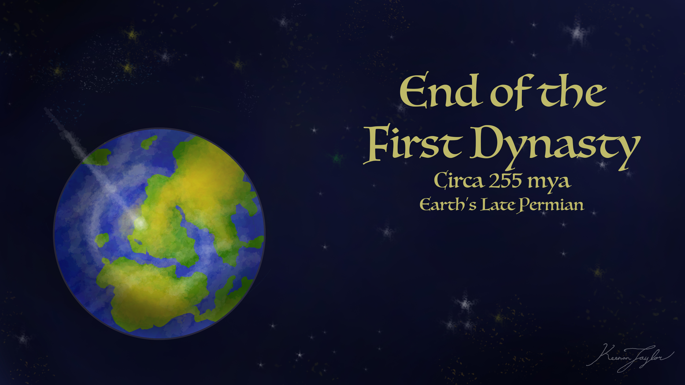
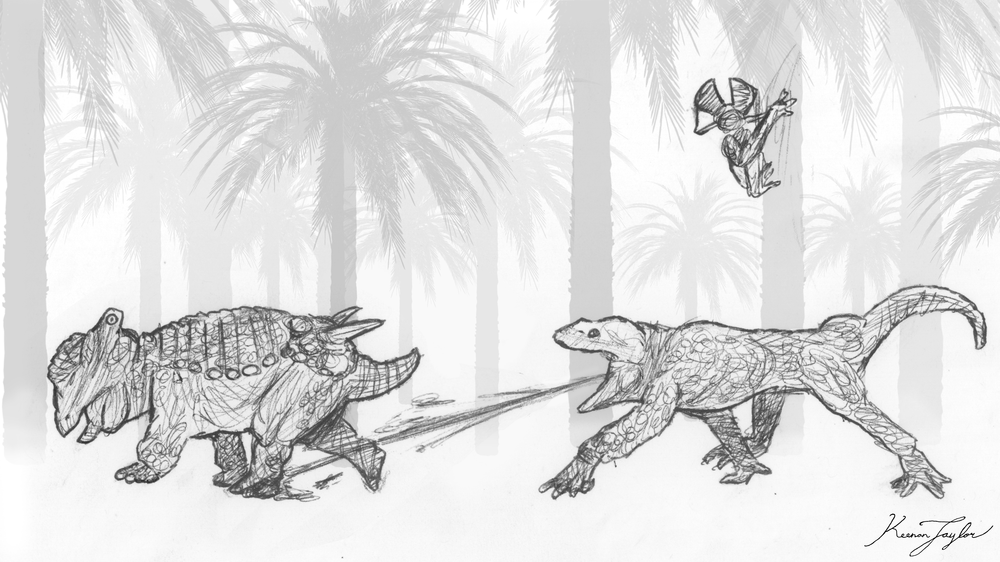
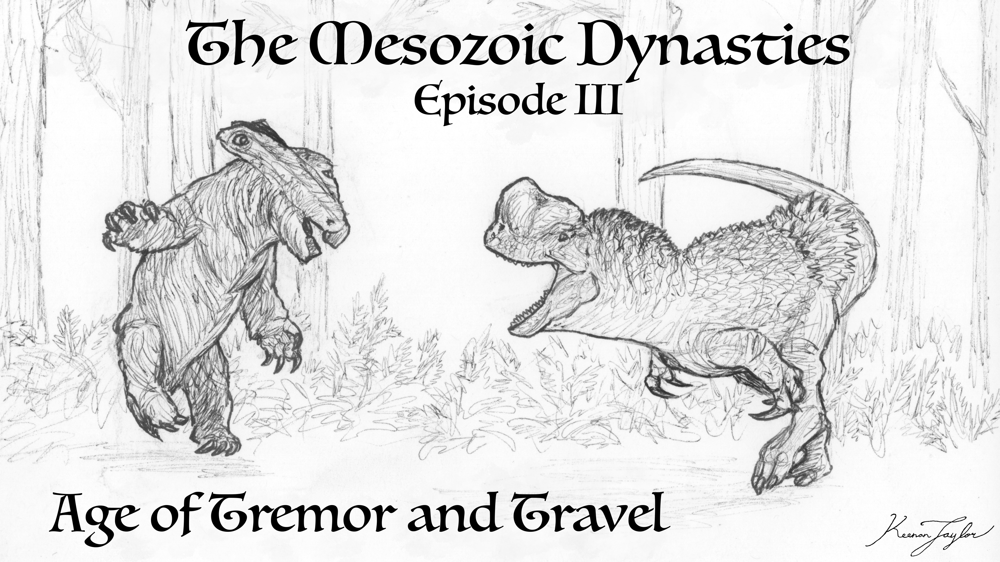
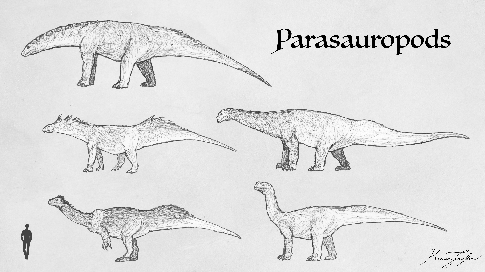
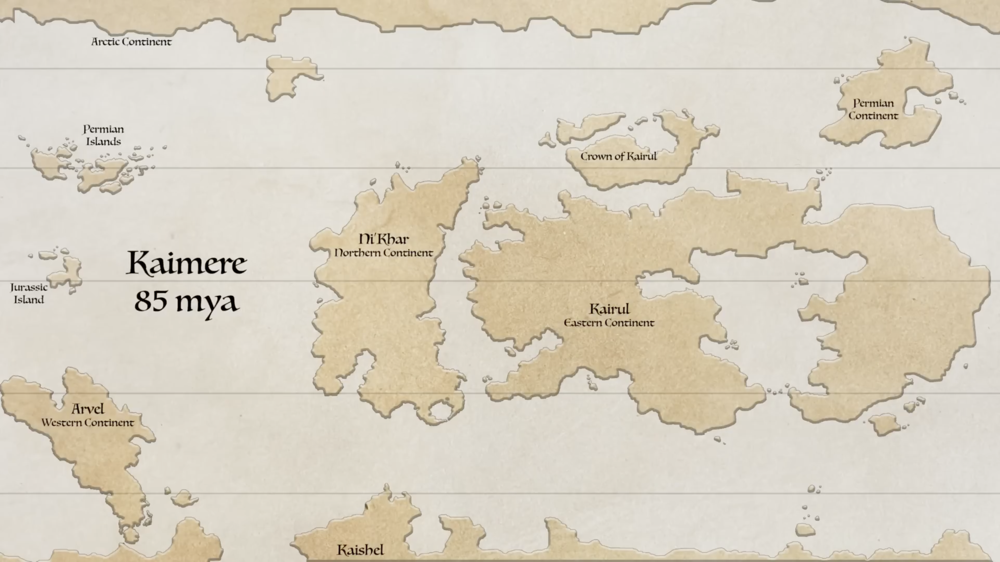
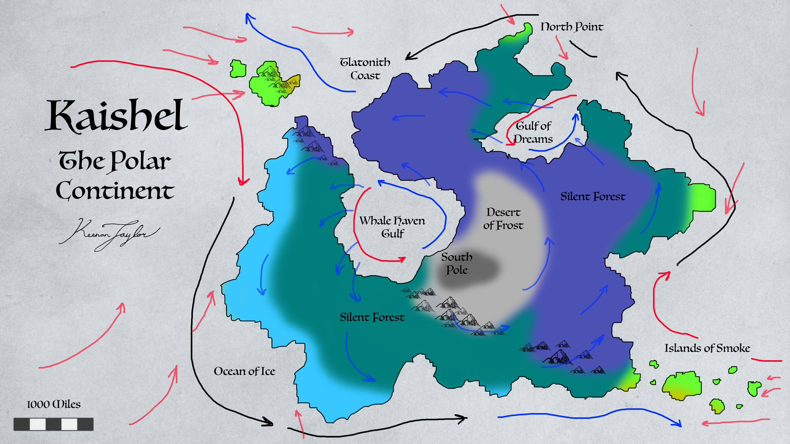
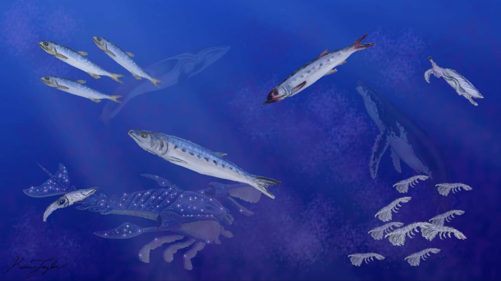

01 · INTRODUCTION
Overview

Kaishel is the great southern polar continent of Kaimere, encompassing the planet's South Pole and supporting one of its most distinctive and ancient terrestrial ecosystems. Although it lies beyond the geographical boundaries conventionally designated as the Known World, it maintains more regular contact with Kaimeran civilization than most other territories beyond that region. Its inhabitants, the Tlaton, have maintained intermittent commercial and cultural relationships with merchants from the Known World for thousands of years, particularly with the To Katon of the south and northwestern coastal regions. Nevertheless, Kaishel remains poorly understood by most naturalists and geographers outside the continent. Its immense forests, extensive cold-water ecosystems, unusual indigenous organisms, and dangerous terrestrial predators have made systematic exploration difficult.
Unlike the more dynamic continental environments of the Known World, Kaishel is a comparatively ancient landmass. Its geographical foundations have remained remarkably stable over geological time, and much of its terrestrial fauna has been isolated from the successive waves of organisms introduced by the Portal. The continent's last direct connection to the Portal's geographical range occurred more than 100 million years ago. Its biological communities consequently preserve numerous lineages whose histories extend into the earliest periods of Kaimere's terrestrial ecosystems. Some of these organisms can trace their ancestry to the first harvests of Earth life during the Late Devonian and early Carboniferous, preceding the evolutionary divergence of major tetrapod groups familiar from Earth's fossil record.
Kaishel's isolation has not resulted in an entirely static ecosystem. Its inhabitants have undergone extensive evolutionary diversification, particularly following the arrival of dinosaurs during the Cretaceous biotic interchange. Nevertheless, the continent has retained a substantially greater proportion of its ancient endemic fauna than most of Kaimere. Its ecological history is therefore characterized by the coexistence of exceptionally old indigenous lineages, later dinosaurian arrivals, and a comparatively small number of more recent immigrants.
The continent's position around the South Pole gives it an unusually cold climatic regime for a planet whose global average temperatures are considerably warmer than those of modern Earth. Its climate is not uniformly frozen, however. The extensive coastlines receive substantial marine influence, and the prolonged austral summer produces seasonal pulses of meltwater and biological productivity. Large areas of the continental interior support forests despite their high latitude, while the region immediately surrounding the South Pole is dominated by the exceptionally cold and arid Desert of Frost. Between these environments lie mountain systems, glacial valleys, salt flats, and enormous stretches of forest that form the principal terrestrial habitat of the continent.
The most extensive of these forests are collectively called the Silent Forest. They are among the most extraordinary woodland ecosystems on Kaimere, containing ancient trees hundreds of feet tall, broad interlocking canopies, and a distinctive assemblage of terrestrial and aerial microorganisms. Their ecological structure is shaped by an unusual form of predation. The dominant terrestrial predators, commonly called the Silent Ones, are highly specialized hunters that rely upon sound to locate their prey. Their presence has imposed a profound selective pressure upon the surrounding fauna, favoring animals that communicate through visual displays, tactile contact, and other methods that minimize noise. This pressure extends beyond the animal communities to the indigenous human populations, whose mainland cultures maintain strong religious prohibitions against unnecessary vocalization.
The Silent Ones are not themselves silent organisms. Their echolocation produces conspicuous sounds, and they communicate through a variety of grunts, hisses, and other vocalizations. The silence of Kaishel is instead a consequence of the ecological influence exerted by these predators. Much of the continent's interior is quiet because the animals living there have evolved to avoid attracting their attention. It is a landscape in which the soundscape has been shaped by the risk of predation.
The coastal regions present a striking contrast. Their rocky shores, kelp forests, wetlands, fern prairies, and marine shallows support dense populations of pinnipeds, seabirds, cetaceans, marine reptiles, and other large animals. The surrounding cold oceans are exceptionally productive because of the interaction between abyssal volcanism, glacial runoff, seasonal upwelling, and the indigenous photosynthetic microorganisms of Kaimere. Large filter feeders gather in the continent's gulfs during the summer, while extensive kelp forests support substantial populations of marine herbivores.
The Whale Haven Gulf is particularly important. This immense embayment penetrates deep into Kaishel, approaching the region surrounding the South Pole. During the austral summer, meltwater from the continent's glaciers flows into the gulf, carrying nutrients and organic material into its waters. The resulting seasonal abundance supports numerous large filter-feeding animals, including several kinds of whales, marine scorpions, and krakens. The gulf is one of the principal centers of marine productivity on the continent and an important feature of its broader ecological system.
Kaishel is therefore a region defined by the coexistence of cold and biological abundance. Its interior forests are among the oldest and most dangerous terrestrial ecosystems on Kaimere, while its surrounding oceans support extraordinary concentrations of marine life. Its geological stability has allowed ancient lineages to persist, but its ecological communities have been repeatedly reorganized by climatic changes, biotic interchange, and the emergence of highly specialized predators. It is a continent whose apparent stillness conceals a complex history of evolutionary competition and environmental adaptation.
02 · Beginnings
Geological Origins

The geological history of Kaishel is closely associated with the formation and fragmentation of Kaimere's ancient southern supercontinent. During the First Dynasty, the continents underwent extensive movements that brought previously separated landmasses into closer contact. By approximately 295 million years ago, continental convergence had enabled substantial biological interchange, bringing several previously isolated endemic tetrapod clades into contact with one another. These interactions produced increasingly complex ecosystems, particularly within the extensive humid environments that characterized Kaimere during the earlier part of its history.
The southern supercontinent was an important center of this endemic diversification. Its geographical separation from the tropical continental regions allowed several ancient lineages to persist and develop independently. Among the most successful were the ambuloichthyans, heterotherms and fabodonts, two major groups of native tetrapods whose evolutionary histories predated the arrival of later Permian fauna.

The continued convergence of Kaimere's continents around 265 million years ago produced substantial environmental changes. Continental movement altered the arrangement of oceanic passages and atmospheric circulation, disrupting the wind and water currents that had sustained the global hothouse. The reduction of these circulation systems contributed to increasing aridity across considerable portions of the planet. The once-extensive humid forests and swamps began to contract, and many organisms adapted to persistently warm, wet environments experienced substantial ecological disruption.
The southern supercontinent was comparatively successful in retaining its endemic fauna. The heterotherms and fabodonts possessed representatives adapted to drier environments, and their geographical isolation allowed them to maintain populations even as more tropical ecosystems underwent substantial turnover. In the wetter and more northerly regions, however, newly introduced Late Permian organisms encountered increasingly favorable conditions and competed with the existing native fauna. The more aquatic fabodont lineages were particularly disadvantaged by the loss of wetlands and shallow-water habitats.

By approximately 255 million years ago, the First Dynasty reached its conclusion following the impact of an extraterrestrial object in the tropical region of the western Ni'Khari-Kairulan supercontinent. Although the impactor was smaller than the asteroid responsible for the Cretaceous-Paleogene extinction on Earth, its effects were devastating because of the already deteriorating environmental conditions. The resulting ecological disruption produced the end of the First Dynasty and initiated a period of extensive biological turnover.
The subsequent recovery of the tropical supercontinent encouraged the Portal to increase its harvesting activity. Waves of Late Permian organisms were introduced to restore biological diversity following the extinction, beginning the Permian Dynasty. These new arrivals rapidly occupied many of the ecological roles previously held by indigenous First Dynasty organisms. The tropical continents became dominated by the incoming Permian fauna, while several of the older lineages were displaced toward less competitive environments.

Kaishel's geographical position and relative isolation became increasingly important during this period. Its southern location and separation from the principal Portal territory limited the extent to which newly harvested organisms could enter its terrestrial ecosystems. Many of its endemic lineages consequently continued to evolve without experiencing the same degree of competition that transformed the tropical continents. This isolation laid the foundation for the continent's unusually ancient modern fauna.
During the Mesozoic, the southern supercontinent remained a major geographical unit. It included what are now Kaishel, Arvel, Pakardia, and the Khalin islands. Although the landmass was predominantly polar, its northern portions extended into temperate latitudes. Arvel occupied one of these more northerly regions and gradually began separating from the southern continental mass.

The disintegration of this landmass was an extended process rather than a single event. Arvel would not become completely independent until approximately 80 million years ago, but its separation was already advanced by the Early Cretaceous. Approximately 115 million years ago, a short-lived land connection between western Arvel and eastern Kairul facilitated a major biotic interchange.
The precise geographical configuration of this connection remains debated. One interpretation places the interchange directly between western Arvel and eastern Kairul. Another proposes that the changing orientation of Arvel temporarily connected Ni'Khar and Kaishel through a different series of land connections. The former interpretation is generally more widely accepted, although the incomplete geological and paleontological record of eastern Kairul prevents the question from being fully settled.
The interchange was especially important because the southern continent had previously been dominated by endemic tetrapod groups. The heterotherms occupied many of the principal predatory niches, while fabodonts constituted a major component of the large-herbivore community. These organisms possessed numerous adaptations to cooler environments, but the global climate was becoming increasingly warm. Their established ecological success did not necessarily translate into an ability to compete with organisms more suited to the changing conditions.
The incoming dinosaurs, particularly coelophosaurs and parasauropods, were experiencing the opposite circumstances. Their original environments were becoming increasingly warm and potentially less favorable, while the southern continent offered extensive new habitats. The resulting interchange therefore favored the incoming dinosaurs, which rapidly dispersed across Arvel and the rest of the southern landmass.

The event is associated with the Age of Tremor and Travel, conventionally dated to approximately 115 — 85 million years ago. Although the period encompassed a relatively short-lived land connection, the biological consequences extended far beyond the duration of the bridge itself. Several dinosaurian lineages became firmly established on the southern continent, and their descendants formed a substantial proportion of its subsequent terrestrial megafauna.

The parasauropods were especially well suited to the cold environments of the southern landmass. Unlike true sauropods, their relatively extensive feathering and more sophisticated nesting and parental-care strategies allowed them to reproduce successfully in environments subject to freezing temperatures. Their ancestors had already developed significant cold adaptations during earlier climatic fluctuations, and these characteristics became advantageous in Kaishel's increasingly isolated ecosystems. The distinction between parasauropods and true sauropods is important to understanding the continent's modern fauna. True sauropods possess extensive skeletal pneumaticity, highly flexible vertebral joints, and physiological adaptations that permit enormous body sizes. Parasauropods retain some pneumatic features but are substantially more robust, with less extensive air-sac invasion and less flexible necks. Their body plans consequently remain constrained by more conventional terrestrial size limitations, although they can attain masses of approximately 15 — 20 tons.

By approximately 85 million years ago, the southern continent was undergoing further fragmentation. Volcanism increased, tectonic movements became more pronounced, and the landmass continued its clockwise rotation. The third-to-fourth Mesozoic Dynasty transition is consequently difficult to define precisely, but the fragmentation of the southern continent represents one of the principal geological developments associated with this period. Kaishel remained substantially more stable than the northern continental regions. Arvel finally separated approximately 80 million years ago, while the easternmost portion of the southern landmass eventually became Pakardia. These events established Kaishel as an increasingly isolated polar continent.
Approximately 40 million years ago, Pakardia separated from the Pakardio-Khalin plate and began moving northward. The separation of these landmasses disrupted established continental and oceanic connections, contributing to substantial changes in the ecosystems of Kaishel. The continent lost several major components of its large dinosaurian fauna, including its most successful parasauropod and coelophosaur lineages. Smaller representatives persisted, but many of the ecological roles previously occupied by large dinosaurs became available to other organisms.
Multituberculates and small dinosaurs diversified into these vacancies. The apex predators, however, were increasingly dominated by the heterotherms. A particularly important development was the diversification of blind, echolocating heterotherms, subsequently recognized by Assembly naturalists as the xenosimians.
These animals descended from an ancient lineage whose ancestors had originally been arboreal and even capable of gliding. Their descendants became increasingly specialized for nocturnal predation and eventually abandoned visual hunting in favor of highly developed auditory systems. Their evolutionary history was already deeply rooted in Kaishel, but the ecological changes following the continental separations created opportunities for their expansion.
The genus Xenospiritus ultimately became particularly successful, spreading across much of the continental interior. Its members developed into specialized terrestrial predators whose ecological influence became so extensive that they fundamentally altered the behavior of the continent's other inhabitants. Their success marks an important stage in the establishment of the modern Silent Forest ecosystem.
Kaishel's geological stability is therefore relative rather than absolute. The continent has experienced substantial environmental changes, including the consequences of continental fragmentation, changes to oceanic circulation, and regional extinctions. Nevertheless, compared with Arvel and Pakardia, its underlying geographical structure has remained unusually consistent since before the earliest harvests. This stability, combined with its prolonged isolation from the Portal, has allowed ancient evolutionary lineages to persist into the present.
03 · Structure of Kaishel
Geographic Context
Kaishel occupies the southernmost major continental region of Kaimere, extending around the South Pole. Its position places it within a climatic regime dominated by high-latitude solar conditions, cold surrounding oceans, and substantial seasonal variation in daylight. The continent is not simply an extensive polar ice sheet. It contains broad forested regions, mountain systems, coastal plains, inland basins, salt flats, and extensive cold deserts.
The accompanying geographical map depicts Kaishel as a large, irregularly shaped continent surrounded by the Ocean of Ice and several smaller island groups. Its northern coastline contains several major projections and embayments, while the southern and southwestern portions are comparatively extensive and irregular. The landmass is interrupted by two especially prominent gulfs, the Whale Haven Gulf on the western side and the Gulf of Dreams in the northeast.
The continent's interior is dominated by the South Pole and the Desert of Frost, an exceptionally cold and arid region surrounded by the extensive forest systems. A mountainous zone extends across portions of the southern interior, forming an important topographical boundary between the central polar environment and the more productive forested regions. Additional mountain clusters occur toward the southeastern interior, where they contribute to regional differences in drainage, vegetation, and climatic exposure.
The western coastline is bordered by the Ocean of Ice, whose cold waters influence the maritime climate and provide a substantial source of nutrient-rich currents. The northwest contains the Tlatonith Coast, a region facing the cold northern and northwestern oceanic circulation. The coast is geographically complex, with several islands like Gyrehall Island and offshore features that modify local current patterns and provide habitat for marine organisms.
Gyrehall Island is 400 miles away from the mainland, but when sea levels droped around 1.5 million years ago, interexchange between the mainland Kaishel and the island became possible. Today, its a prominent settlement area for the Tlaton since the Moørkutlot have been hunted to extinction on the island. However, intrduced feral dogs, and large coelophosaurs are still dangers to be wary of.
The northernmost projection of the continent is identified as North Point. Its position exposes it to the polar oceanic circulation and makes it one of the most prominent geographical features of the northern coastline. The eastern side of the continent contains the Gulf of Dreams, a large embayment partially enclosed by surrounding land. Its position creates a distinct marine environment that is influenced by the circulation of the surrounding northern waters.
The Whale Haven Gulf is the most important inland marine feature of Kaishel. Its western entrance opens toward the surrounding ocean, while its deep penetration into the continent brings marine waters close to the South Pole. The gulf is surrounded by extensive coastal and interior drainage systems, allowing seasonal glacial runoff to enter its waters. Its geographical configuration is particularly significant because it creates a sheltered marine environment in which nutrients and organic material can accumulate during the summer.
The southern and southeastern coastline is also associated with the Islands of Smoke, an offshore archipelago situated within the cold waters surrounding Kaishel. These islands occupy a region of important marine circulation and provide additional habitat for coastal organisms. Their proximity to the mainland creates opportunities for dispersal among marine and terrestrial species, although the extent of permanent biological interchange is not uniform across the archipelago.
The principal geographical features are separated by distances of several hundred to more than a thousand miles. The continent is consequently large enough to support substantial regional climatic variation. Its northern coastal zones are not environmentally equivalent to its central polar interior, and its western maritime environments differ considerably from its more sheltered eastern and southeastern regions.
The placement of the major gulfs, mountain ranges, and forested regions is particularly important to this differentiation. The Whale Haven Gulf penetrates the western continental interior and provides a route for marine influence and seasonal runoff. The Gulf of Dreams creates a separate marine embayment in the northeast. The mountains of the interior influence drainage and local atmospheric movement, while the broader continental mass provides substantial shelter from some of the more direct effects of the surrounding oceanic circulation.
There's a broad contrast between the central Desert of Frost and the extensive Silent Forest systems around it. The forests don't form a uniform rings of vegetation. Instead, they distribution their influenced by the availability of moisture, regional temperature differences, and the topographical barriers surrounding the polar interior. The western and southern forests are especially extensive, while the northeastern forest occupies a separate broad geographical region around the Gulf of Dreams.
The geographical stability of Kaishel has had important consequences for its biological history. Its long isolation has limited the arrival of new terrestrial organisms, allowing established communities to evolve with relatively little disruption from successive Portal harvests. The continent's coastline, however, has remained open to marine dispersal, and its waters have provided opportunities for organisms to move between neighboring regions.
04 · Landscape of Kaishel
Overall Habitat Structure
Kaishel's terrestrial habitats are arranged primarily around the interaction of latitude, elevation, oceanic exposure, and the distribution of moisture. The broadest ecological division separates the productive coastal and forested regions from the more extreme central polar interior. Between these environments are transitional woodland zones, mountain habitats, and seasonally exposed landscapes that support more specialized organisms.
The Silent Forest
The continent's most extensive terrestrial habitat is the Silent Forest. These forests occupy enormous portions of the interior and provide the principal environment for much of Kaishel's terrestrial biodiversity. They are characterized by exceptionally large trees, some reaching hundreds of feet in height and persisting for thousands of years. Their canopies are broad and interlocking, forming a continuous cover that insulates the forest floor from the more severe climatic conditions above. The trees are predominantly ancient lineages that have persisted since the early stages of Kaimere's terrestrial ecosystem development. Many of their associated organisms have similarly ancient evolutionary histories. The forest is consequently an unusual ecological archive, retaining biological communities whose origins precede the establishment of many of the major animal groups that dominate the warmer continents.
The forest's canopy provides a relatively stable microclimate. Temperatures beneath the interlocking branches are generally more moderate than those of the exposed terrain, and the vegetation reduces the effects of wind and extreme seasonal cooling. Evergreen foliage is widespread, allowing the forest to maintain substantial biomass throughout the year. This is especially important during the prolonged ' winter, when terrestrial animals must find food despite the absence of the extended summer daylight.
The understory is biologically unusual. In addition to conventional plants and animals, it contains extensive populations of indigenous microbial organisms. Some of these organisms exist as floating bioluminescent particles, collectively referred to as aeroplankton. They are contained and insulated beneath the forest canopy, where they form a substantial component of the ecosystem's nutrient and energy cycles.
Certain microbial hives produce more elaborate composite structures. Although Kaimere has no known endemic multicellular plants or animals, colonies of indigenous organisms can assemble into complex structures that superficially resemble multicellular organisms. Some possess gas-filled sacs containing helium, allowing them to remain suspended in the forest atmosphere. Others filter-feed upon aeroplankton, forming mobile or drifting structures that occupy niches otherwise filled by ordinary aerial organisms.
These composite organisms are particularly important to the forest's ecological distinctiveness. They demonstrate how indigenous microbial communities can produce complex biological systems without possessing the cellular organization of conventional multicellular life. Their presence contributes to the unusual visual appearance of the Silent Forest, where floating points of light and larger suspended structures may be observed among the ancient trees.
The aeroplankton are also harvested by the Tlaton. Some communities collect them and trade them to To Katon merchants, who use the organisms as flavorings and sources of radiant dyes. Such harvesting is limited and shaped by the cultural and religious restrictions governing movement within the interior. The organisms are valuable, but obtaining them requires entering a landscape where the risks of predation are considerable.
The Silent Forest's apparent quietness is its most defining ecological characteristic. The presence of the Silent Ones has produced a substantial pressure on the behavior of other animals. Birds and enantiornithines rely heavily on color and visual displays instead of vocal communication. Large herbivores use conspicuous head structures, patterned skin, and specialized microbial organisms to signal visually to one another. Some maintain contact through heat-sensitive or bioluminescent structures, while others depend upon tactile interactions within the herd.
The Silent Forest also contains a diverse community of mammals, dinosaurs, and endemic tetrapods within it. Many of the mammals belong to multituberculate lineages, which diversified extensively after the decline of the large dinosaurian fauna. The continent also supports arboreal heterotherms and several smaller relatives of the Silent Ones, including specialized predators that remain largely within the canopy. Small coelophosaurs, dromaeosaurs, and firebirds are all prominent within these forests. Meanwhile the parasauropods and fabadonts are the resident herbivores of these forests.
The forests are not uniformly warm or protected. Along rivers, marshes, clearings, and other openings in the canopy, temperatures may become considerably colder than those beneath the dense woodland. These open environments experience greater exposure to wind and seasonal cooling. Their vegetation and animal communities consequently differ from those of the sheltered forest interior. There is also a promient climate differentiation between the forests. The western and southern Silent Forest constitutes the wettest and most structurally complex portion of Kaishel's principal subarctic woodland belt. It occupies the western sector of the continent's forested margin, where persistent maritime influence, frequent orographic precipitation, and comparatively mild seasonal moderation produce conditions far more humid than those found in the eastern Silent Forest. In physiognomic terms, the region is characterized by dense, closed-canopy forests, saturated soils, abundant epiphytes, and an exceptionally rich lower vegetation layer. Meanwhile the eastern forest forms the largest continuous forest ecosystem of eastern Kaishel and occupies the broad belt of coniferous woodland extending from the eastern shores of the Gulf of Dreams southward toward the eastern foothills of the southern mountain systems. The eastern forest as a distinct biome characterized by a colder, drier, and more open structure.
The Desert of Frost

The central Desert of Frost contrasts sharply with the Silent Forest. It occupies the region surrounding the South Pole and is characterized by extremely low temperatures and limited biological productivity relative to the forested lowlands. Despite the availability of water in the form of ice and seasonal melt, precipitation and plant growth are insufficient to support extensive woodland.
The interior includes extensive frozen ground, exposed mineral surfaces, salt flats, and areas of persistent ice. The map's designation of the Desert of Frost reflects the combination of cold and aridity rather than temperature alone. It is not simply a frozen version of the surrounding forest but an environment with its own ecological constraints.
One of the most important habitats within this region is an extensive salt-flat system. Its saline conditions are particularly significant because they exclude several organisms that dominate the Silent Forest. The Silent Ones are strongly affected by salt, which damages their protective slime and discourages them from entering saline environments. This creates a region in which animals otherwise vulnerable to their predation can migrate and exploit seasonal resources.
The polar interior therefore provides an unusual refuge from the continent's dominant terrestrial predators. Its harsh climate and limited productivity prevent it from supporting extensive populations of conventional forest herbivores, but its seasonal resources are important to migrating animals and specialized predators.
The mountain systems separating portions of the Desert of Frost from the surrounding forests create additional habitat diversity. Their higher elevations experience colder temperatures and more exposed conditions than the surrounding woodland. Mountain slopes support specialized vegetation and provide important barriers to animal movement, while valleys concentrate snowmelt and seasonal runoff.
The Fern Prairies
The fern prairies of the western coasts represents one of the most distinctive open habitats on Kaishel and serves as the principal interface between the continent's maritime environments and the great Silent Forests of the interior. Stretching along the western shores facing the Ocean of Ice, these prairies occupy a climatic transition zone characterized by cool maritime conditions, persistent humidity, strong oceanic influence, and comparatively moderate seasonal temperature variation.
Its climate conditions are strongly influenced by the warm current circulating along the western margin of Kaishel which transports moisture poleward and prevents the formation of extensive coastal ice despite the continent's high latitude. Unlike the Silent Forest, where dense vegetation and the dominance of auditory predators have selected for quiet ecosystems, the fern prairies are a comparatively open and dynamic environment.
Wind moving across broad expanses of horsetails and giant ferns produces continuous ambient noise, while crashing surf, seabird colonies, river mouths, and coastal storms create one of the loudest terrestrial habitats on Kaishel. These acoustic conditions profoundly shape the ecology of the region. Predators dependent upon extreme hearing, particularly the larger xenosimian heterotherms, are far less successful here than in the forests. As a consequence, the prairie supports larger concentrations of herbivores, more visible social behaviors, and some of the highest vertebrate biomass densities on the continent.
The prairies function as Kaishel's equivalent of a mammoth steppe, coastal savanna, and temperate grazing plain simultaneously. Yet it is built not upon grasses and flowering plants but upon ancient lineages that would have been familiar hundreds of millions of years ago. Giant horsetails, fern meadows, shrublands, and low gymnosperm thickets dominate the vegetation. These plant communities support immense populations of herbivorous dinosaurs and fabadonts, which in turn sustain some of the largest predators on the continent, including the gigantic ketlrek and mesopredatory dromaeosaurs. Feral dogs also have a prominent presence here, while they are easily prey for the Silent Ones in the forests.
The Coastal Ecosystems
The coastal habitats are among the most biologically productive environments on Kaishel. Their characteristics vary considerably according to local bathymetry. Some shorelines descend rapidly into deep oceanic waters, while others extend outward as shallow continental shelves for hundreds of miles. These differences determine the distribution of kelp forests, benthic communities, marine herbivores, and large predators.
Extensive kelp forests dominate many of the shallow coastal areas. Their rapid growth supports large populations of marine herbivores, including serenians that may exceed 15 tons. Other animals, including non-therian mammals and specialized carbosuchians, also feed upon these marine forests. Cetaceans, penguins, and walruses exploit the associated benthic fauna, while larger predatory reptiles and mammals hunt throughout the kelp systems.
The coastlines are consequently much louder and more densely occupied than the forested interior. Large pinniped colonies, seabirds, marine predators, and crashing surf create a soundscape that contrasts sharply with the quiet of the mainland forests. The Tlaton's coastal communities are accordingly more comfortable with vocal communication than their inland relatives, although their cultural traditions still maintain an awareness of the dangers associated with entering the forest.
05 · The Impact of Weather
Atmospheric Circulation

The atmospheric circulation of Kaishel is dominated by its southern polar position and the contrasting thermal characteristics of the surrounding oceans. Its climate is influenced by the interaction of cold polar air masses, relatively warm maritime air arriving from lower latitudes, and the circulation systems associated with the extensive ocean surrounding the continent.
Warm circulation approaches the continent primarily from lower latitudes. Along portions of the northern and eastern margins, these warmer influences moderate coastal temperatures and contribute to the maintenance of relatively productive terrestrial environments. Their interaction with the colder polar circulation produces pronounced regional gradients, particularly around the northern coastal embayments.
The cool circulation is particularly influential across the southern and western portions of the continent. Cold air and water originating within the polar system maintain low temperatures across much of the Ocean of Ice and the southern continental margins. These influences become increasingly important toward the interior, where the absence of substantial maritime moderation allows temperatures to fall considerably during the long polar winter.
The distinction between warm and cool circulation is especially important around the major coastal embayments. Whale Haven Gulf, for example, receives the influence of cold marine circulation while also experiencing seasonal warming associated with lower-latitude air masses and prolonged summer solar exposure. Its geographical configuration allows these different influences to interact with glacial runoff, producing a highly seasonal coastal environment.
The Gulf of Dreams similarly represents a region where the surrounding circulation interacts with a partially enclosed marine basin. The gulf's orientation and coastal configuration influence the movement of air and water through its waters, producing localized conditions that differ from those of the exposed continental margin.
The central interior is less directly influenced by maritime moderation. Although atmospheric circulation transports moisture and heat inland, the considerable distance from the ocean and the presence of elevated terrain contribute to increasingly continental conditions. The result is a marked distinction between coastal climates and those of the central polar region.
The mountain systems further modify atmospheric circulation through orographic uplift. Moist air encountering elevated terrain is forced upward, cooling and condensing as it rises. This process increases precipitation on exposed slopes while producing comparatively dry conditions on the opposite side of the ranges. These rain-shadow effects are particularly important in determining the distribution of forest cover and the extent of drier inland environments.
The interaction between warm maritime air and cold polar air also contributes to the continent's seasonal weather patterns. During the summer, prolonged solar exposure increases surface temperatures, particularly along the northern coastlines and within the major embayments. This encourages the melting of glaciers and seasonal snowfields, increasing the availability of freshwater across coastal catchments.
During winter, the prolonged absence or severe reduction of solar radiation allows cold continental air masses to dominate much of the interior. The resulting temperature decline is especially pronounced in the central polar regions, where the influence of warmer maritime air is comparatively weak.
The atmospheric system therefore produces a pronounced contrast between the relatively moderated coastal margins and the severe continental interior. This distinction is essential to understanding Kaishel's ecological organization, as the continent's most extensive forests and productive terrestrial habitats are associated with regions where maritime and seasonal influences prevent the development of uniformly extreme polar conditions.
06 · Impact of Freshwater
Hydrology and River Systems
Kaishel's hydrological systems are closely associated with its glacial distribution, mountain ranges, and extensive coastal drainage basins. Although much of the continent experiences substantial seasonal freezing, its rivers and freshwater environments support considerable biological productivity, particularly during the prolonged summer.
The principal sources of freshwater are seasonal snowmelt, glacial runoff, precipitation, and localized groundwater systems. The continent's elevated interior and mountain ranges provide substantial seasonal water storage, with accumulated snow and ice releasing freshwater during the warmer months. This discharge feeds rivers that descend through mountain valleys and forested lowlands before reaching the surrounding ocean.
The most significant hydrological feature is the extensive drainage system associated with Whale Haven Gulf. The gulf's proximity to the southern polar interior and surrounding mountain systems allows it to receive runoff from a substantial catchment area. During summer, melting glaciers and seasonal snowfields produce large freshwater discharges, transporting nutrients and suspended sediments into the gulf.
This seasonal influx is particularly important to the marine ecosystem. Glacial runoff introduces nutrients accumulated through terrestrial weathering and biological processes, while the freshwater itself creates localized stratification within coastal waters. The interaction between freshwater discharge and marine circulation generates highly productive environments that support extensive populations of filter feeders and other marine organisms.
The rivers draining toward Whale Haven Gulf also support extensive riparian habitats. Their floodplains and surrounding wetlands provide seasonal feeding grounds for herbivorous dinosaurs, mammals, fabadonts, and other terrestrial organisms. The availability of freshwater during summer creates important concentrations of animal activity along the gulf's margins.
Other major drainage systems are associated with the mountain ranges of southern and southeastern Kaishel. These rivers generally follow the topographical gradients established by the continent's geological structure, descending through valleys and forested uplands before reaching the coast. Their courses are influenced by the distribution of resistant geological formations, glacially modified valleys, and local differences in elevation.
The rivers of the Silent Forest are particularly important despite their comparatively limited discharge. They maintain freshwater corridors through otherwise extensive evergreen woodland, providing habitat for aquatic organisms and creating routes through which nutrients are redistributed across the forest ecosystem. Their banks support mosses, ferns, fungi, and numerous other organisms adapted to the humid conditions beneath the forest canopy.
Hydrological conditions within the Desert of Frost are considerably different. Low precipitation and prolonged freezing limit the development of extensive surface drainage networks. Many streams are intermittent, becoming active primarily during brief periods of seasonal melting. Elsewhere, water remains trapped within frozen ground or accumulates in localized depressions.
The distribution of rivers also has an important ecological consequence in Kaishel's interior. According to the traditions of the indigenous Clatton, following rivers is among the safest methods of traveling through the Silent Forest. Although the precise biological or environmental basis of this practice remains uncertain, the association between waterways, salt availability, and the distribution of dangerous predators has attracted considerable interest among naturalists.
The continent's rivers consequently serve several overlapping functions. They provide freshwater, maintain forest productivity, transport nutrients into marine environments, and create important ecological corridors. Their seasonal behavior is particularly significant because the timing and magnitude of glacial discharge influence both terrestrial and marine productivity.
07 · Influence of the Ocean of Ice
Oceanography and Marine Productivity

The surrounding oceans are among the most productive marine environments documented on Kaimere. Despite their high latitude and generally cold conditions, the waters surrounding Kaishel support an extraordinary abundance and diversity of marine organisms. This productivity results from the interaction of several processes, including abyssal volcanic activity, cold-water upwelling, glacial runoff, and the extensive distribution of endemic purple algae.
The continental shelf is highly variable. Along certain coastlines, shallow marine environments extend hundreds of miles offshore, providing extensive habitat for kelp forests, benthic communities, and large marine herbivores. Elsewhere, the continental margin descends rapidly into deep water, creating steep bathymetric gradients and access to abyssal environments.
The combination of these contrasting marine environments creates substantial habitat diversity. Shallow coastal waters support extensive kelp forests and pebble lagoons, while deeper regions sustain large pelagic predators and organisms associated with the ocean floor. The distribution of marine biomass is further influenced by the movement of nutrient-rich waters through the surrounding current systems.
Cold-water upwelling is especially important. Deep oceanic waters carry nutrients accumulated through the decomposition of organic matter toward the surface, where they become available to photosynthetic organisms. These nutrients support extensive populations of purple algae, an endemic component of Kaimere's marine ecosystems. Their productivity provides the foundation for substantial food webs, supporting both small consumers and enormous marine vertebrates.
Abyssal volcanic activity contributes additional nutrients and chemical energy to the surrounding ocean. Hydrothermal systems support specialized biological communities and release minerals that can be incorporated into broader marine nutrient cycles. Although their contribution to surface productivity varies geographically, they represent an important component of the oceanographic system.
Glacial runoff provides another major source of nutrients, particularly during the summer. The melting of continental glaciers transports freshwater and weathered material into coastal environments, producing seasonal increases in productivity. This phenomenon is most pronounced around Whale Haven Gulf, where extensive drainage systems discharge into a relatively enclosed marine basin.
Whale Haven Gulf is consequently one of the continent's most important marine habitats. Its seasonal productivity supports more than a dozen large filter-feeding lineages, including familiar cetaceans such as humpback whales and several entirely different groups of marine organisms. Among these are specialized marine scorpions and krakens, which exploit the enormous concentrations of suspended organic material and smaller prey.
The gulf's productive waters also attract numerous large predators. Marine reptiles, cetaceans, sharks, giant fish, and other predatory organisms exploit the seasonal abundance of prey. These populations are not necessarily permanent residents, as many species undertake extensive migrations in response to seasonal changes in food availability.
The surrounding coastal waters also support exceptionally diverse pinniped communities. Unlike the relatively limited diversity of walruses on Earth, Kaishel possesses numerous walrus lineages occupying a wide range of ecological niches. True seals are also abundant.
Kelp forests are particularly extensive along the continent's shallow coastal shelves. Their rapid growth and high productivity support a diverse assemblage of marine herbivores, including sirenians. The largest of these animals exceed fifteen tons, making them among the most substantial marine herbivores in the region. Other consumers include marine dinosaurs, nontherian mammals, and specialized amphibious carbosuchians.
The marine forests also support large populations of animals feeding on benthic organisms. Cetaceans, penguins, walruses, and other marine vertebrates exploit the rich invertebrate communities occupying the seabed. The resulting ecosystem is characterized by extensive energy transfer between primary producers, benthic consumers, and large marine predators.
Marine productivity around Kaishel has consequences extending well beyond the continent itself. The circulation of cold, nutrient-rich waters toward lower latitudes transports marine productivity into northern regions, contributing to the biological richness of the oceans surrounding the Known World. Kaishel therefore functions as an important source of marine nutrients and biomass for a much larger portion of Kaimere's oceanic ecosystem.
The oceanographic system is consequently inseparable from the continent's terrestrial ecology. Marine productivity supports immense coastal animal populations, contributes nutrients to freshwater and terrestrial environments, and influences the climatic conditions of the surrounding landmass.
08 · Temperature Differentiation
Climatic Zonation
The climatic geography of Kaishel is characterized by pronounced regional variation. Although the continent occupies predominantly polar latitudes, its extensive coastline, oceanic circulation, mountain systems, and internal geographical structure produce several distinct climatic zones. The accompanying Köppen map illustrates these differences through the distribution of comparatively mild maritime environments, colder forested regions, and the extremely cold interior.
The most important climatic distinction is between the maritime margins and the continental interior. The northern and portions of the eastern coastline experience greater moderation from relatively warm oceanic circulation, while the western and southern margins are more strongly influenced by cold polar waters. Inland, the moderating influence of the ocean decreases, producing increasingly severe conditions.
Northern Coastal Zone
The northernmost portions of Kaishel experience the mildest climatic conditions on the continent. North Point and the surrounding coastal regions occupy the transition between polar and subpolar environments, receiving the strongest influence from relatively warm circulation entering from lower latitudes.
These regions experience comparatively favorable temperatures and support substantial forest cover. Their maritime setting prevents the most extreme temperature fluctuations, while seasonal precipitation maintains productive terrestrial environments. The northern coastline is consequently among the continent's most important regions for terrestrial biodiversity.
The Tlatonith Coast represents an important component of this zone. Its vegetation is supported by maritime moisture and comparatively moderate temperatures, creating extensive forest habitats and productive coastal ecosystems.
Western Maritime Zone
The western coastline is strongly influenced by the cold waters of the Ocean of Ice. Although the region receives seasonal warming from atmospheric circulation, its maritime environment maintains comparatively low temperatures throughout much of the year.
The coastal landscape contains extensive forests, wetlands, and open habitats, with climatic conditions varying according to latitude and local topography. The presence of shallow continental shelves and productive marine environments also contributes to the ecological importance of this region.
Farther inland, the western coastal climatic influence becomes increasingly modified by the continent's forested interior and mountain systems.
Eastern Maritime and Forest Zone
The eastern portion of Kaishel contains extensive areas of the Silent Forest and experiences a complex interaction between maritime influences and continental conditions. Relatively warm circulation along portions of the eastern margin moderates the coastal climate, while colder polar influences become increasingly important farther south.
The Gulf of Dreams represents an important climatic and geographical feature within this region. Its partially enclosed waters create localized maritime conditions, while surrounding forests benefit from the availability of moisture and the moderating influence of the ocean.
The eastern forest zone is characterized by extensive evergreen vegetation, relatively stable ground-level temperatures beneath the canopy, and substantial biological productivity. Its climate is sufficiently moderated to sustain large trees and a diverse assemblage of terrestrial organisms.
Central Polar Zone: Desert of Frost
The Desert of Frost occupies the central region surrounding the South Pole and represents the most severe climatic environment on the continent.
Its position deep within the polar interior, combined with its distance from maritime moderation, produces extremely low temperatures and limited precipitation. The region is characterized by a cold desert climate, with extensive frozen ground, exposed mineral surfaces, and comparatively sparse vegetation.
The mountain systems surrounding portions of the interior further influence its climatic conditions. Orographic precipitation removes moisture from air masses crossing elevated terrain, contributing to drier conditions in leeward regions.
Despite its harshness, the Desert of Frost supports specialized organisms adapted to extreme seasonal fluctuations. Its salt flats and exposed mineral landscapes are particularly important for certain endemic heterotherms, whose physiological adaptations permit survival in environments unsuitable for many other terrestrial predators.
Southern Maritime Zone
The southern coastline is strongly influenced by cold polar oceanic circulation. Its climate is generally severe, with substantial seasonal temperature variation and considerable exposure to maritime winds.
Nevertheless, the surrounding marine ecosystem remains highly productive. Coastal waters receive nutrients from upwelling and seasonal glacial runoff, supporting extensive marine food webs. Terrestrial productivity is more restricted than along the northern coastline, although localized sheltered environments support vegetation and substantial animal populations.